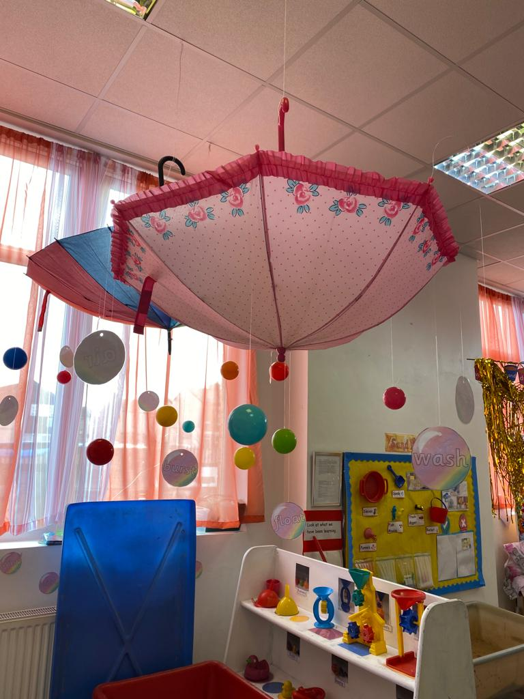

Finding the right preschool near me is a top priority for many UK parents. Early childhood is crucial for social, emotional, and cognitive development, so children need a safe and engaging environment. A quality preschool encourages curiosity, creativity, and communication skills while laying the groundwork for future learning.
For families looking for a child‑friendly nursery school near me, balancing care with meaningful learning is key. Lemon Tree Preschool offers a warm, welcoming environment paired with a structured curriculum. Through play-based activities and small group interactions, children gain confidence, develop key skills, and enjoy a happy start to their educational journey.
Why Parents Search for a Preschool Near Me
Many UK families start looking for a preschool near me before their child turns two, anxious to secure a place that fits both their family routine and their child’s needs. Safety is top of mind for most parents, closely followed by qualified staff and a strong focus on early cognitive and social development. In England, three out of five children aged under five receive formal childcare such as nurseries or preschool programmes, showing how widespread early years support has become.
For instance, parents often ask about how preschool admissions and enrollment near me work and what day‑to‑day life looks like in a welcoming setting. It helps to think of this search as about more than convenience; it is about ensuring a nurturing foundation for your child’s future.
What Makes Lemon Tree a Trusted Preschool Near Me
Lemon Tree stands out because it focuses on children’s wellbeing as much as their learning. Many parents want a safe and nurturing preschool for toddlers where children are valued as individuals and encouraged to grow at their own pace.
At Lemon Tree, staff are chosen not just for qualifications but for their gentle approach to children, creating a space where curiosity thrives. This preschool embraces play‑based learning, creative activities and responsive care that supports each child’s emotional well-being. In fact, UK initiatives increasingly emphasise high‑quality early education as essential for a child’s success across school and later life.
Moving from general concerns to more specific experiences helps illustrate why a trusted local option matters to parents.
Care and Learning at the Heart of Our Preschool Approach
When you walk into Lemon Tree Preschool, you can feel the balance between care and learning. The environment is warm and structured, designed to help toddlers explore and interact comfortably throughout the day. The EYFS (Early Years Foundation Stage) framework guides how children develop social, emotional, and cognitive skills before starting school.
Early years education in the UK focuses on whole‑child development, giving children chances to form friendships, learn new skills and build confidence before they start school. Research shows that high‑quality early childhood experiences improve language and social abilities, along with cognitive development in later years.
How We Support Emotional, Social, and Cognitive Growth
At Lemon Tree, this support happens through small group activities and everyday routines that encourage independence and social bonding. For example, story time encourages listening and language skills, while group play sessions help children navigate sharing and cooperation. These moments build confidence and resilience in ways that feel natural for children at this stage.
Rather than rushing through lessons, Lemon Tree embraces learning as a continuous process that blends play with meaningful tasks.
Our Early Years Curriculum and Learning Activities
The curriculum at Lemon Tree Preschool emphasises creativity, language development and opportunities to engage in structured and unstructured play. Children are encouraged to explore sensory activities, arts and crafts, and simple problem‑solving tasks that make them curious about the world. These activities align with early education principles used across quality UK nurseries and preschools, preparing young learners with foundational skills.
Play‑based learning plays a big role here, since young children absorb so much through hands‑on experiences and peer interaction.
Qualified Teachers and Caring Staff at Lemon Tree Preschool
Parents often look for preschools with experienced teachers near them because teaching quality directly affects children’s experiences and development. At Lemon Tree, the team includes trained early years educators who understand how to balance gentle guidance with encouraging independence. Having familiar faces throughout a child’s day helps build trust and lets children explore new routines with confidence.
This combination of care and expertise creates a nurturing learning environment that local families value highly.
Location, Accessibility, and Convenience for Local Families
Location matters when choosing a local preschool, especially for busy families juggling work and childcare commitments. Lemon Tree is easy to reach for many communities, offering flexible part‑time and full‑time nursery options that fit a range of schedules.
This convenience makes everyday life more manageable, especially for families using funded early years entitlements such as the UK’s 30‑hour childcare offer for three‑ and four‑year‑olds.
These practical details often influence parents’ choice just as much as the quality of care itself.
Preschool Near Me: What Parents Should Look For
When evaluating options, consider both care and educational value. Look for nurseries and preschools that prioritise safe spaces, attentive staff, age-appropriate activities, and strong communication with families. Settling-in support and structured play help children learn through natural exploration, making the transition smoother.
This focus will make the transition smoother and more meaningful for your child.
Final Thoughts
Choosing the right preschool near me means more than picking a convenient address. It is about finding a place where your child feels safe, supported, and inspired to explore and learn. The right environment helps children build confidence, social skills, and a love for learning from the very beginning.
A setting like Lemon Tree Preschool gives families confidence that both care and early learning are prioritised in a way that feels warm and engaging. When visiting local options, it is important to consider the environment, staff, and curriculum to ensure your child’s early years are nurtured on a strong and supportive foundation.
Frequently Asked Questions
At what age do children start preschool at Lemon Tree?
Most preschools, including Lemon Tree, welcome children from around two until school age, with flexible entry depending on development and family needs.
How is a preschool different from a nursery school near me?
Preschools often focus more on preparing children for formal schooling, while nursery schools may emphasise care and play for younger toddlers.
What should I look for when choosing a preschool near me?
Consider safety, staff experience, curriculum activities and how comfortable your child feels during visits.
How does Lemon Tree support early learning and care?
Lemon Tree blends nurturing care with structured learning activities that encourage emotional, social and cognitive development.
Is preschool important for a child’s development?
Yes, quality early years education supports language, social skills and lifelong learning habits, helping children start primary school with confidence.